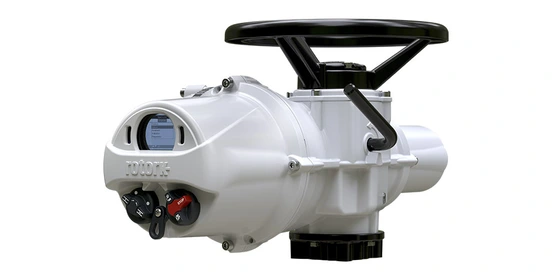

IQ3 Pro và IQ3 Perform là hai dòng actuator điện thông minh cùng nền tảng điều khiển IQ3 của Rotork, dùng chung cấu trúc cấu hình non-intrusive, data logger và Bluetooth Setting Tool Pro. Nhiều khách hàng mặc định IQ3 Perform là bản "yếu hơn" vì tên gọi "introductory level", nhưng khi đối chiếu trực tiếp trang sản phẩm hiện hành, dải torque của phần lớn biến thể multi-turn giữa hai dòng lại trùng nhau. Bài viết chỉ ra khác biệt thật giữa hai dòng và tiêu chí chọn đúng cho hệ thống van tại Việt Nam.

Trả lời nhanh
- Torque trực tiếp của các biến thể multi-turn tương đương (Standard, IQ3S, IQ3D, IQ3M) giữa IQ3 Pro và IQ3 Perform trùng nhau theo trang sản phẩm hiện hành — khác biệt không nằm ở torque.
- IQ3 Pro có thêm 3 biến thể mà IQ3 Perform chưa có trong danh mục hiện tại: IQ3H (tốc độ cao/self-locking), IQ3SET (tương thích actuator cũ) và IQ3ML (output tuyến tính).
- Với part-turn, IQT3 Perform có mức torque khởi điểm thấp hơn (50 Nm) so với IQT3 Pro (125 Nm), phù hợp thêm cho van nhỏ.
- IQ3 Perform được Rotork ghi rõ "không có sẵn ở mọi khu vực" — cần xác nhận khả năng cung cấp tại Việt Nam trước khi chào giá.
- Card Ethernet công nghiệp (Modbus TCP/EtherNet-IP/PROFINET) được nêu trong tài liệu IQ3 Pro nhưng chưa thấy mô tả tương đương trên các trang IQ3 Perform đã kiểm tra.
IQ3 Pro và IQ3 Perform là gì
Cả hai đều thuộc họ actuator điện thông minh IQ3 của Rotork, dùng cho van multi-turn và part-turn trong công nghiệp. IQ3 Pro là dòng đầy đủ tính năng của nền tảng IQ3. IQ3 Perform được Rotork mô tả là "cấp giới thiệu tiết kiệm chi phí để sở hữu IQ3" (cost-effective introductory level to IQ3 ownership), vẫn dùng chung nguyên lý đo torque/vị trí độc lập, cấu hình không xâm nhập và data logger, nhưng danh mục biến thể hẹp hơn.
Mỗi dòng đều chia theo nguồn điện và duty cycle: bản 3-pha tiêu chuẩn, IQ3S/IQT3 1-pha, IQ3D DC (24/110 VDC) và bản modulating (IQ3M cho multi-turn, IQT3M cho part-turn) chịu tần suất đóng cắt cao hơn (Class C). Phần part-turn còn có tùy chọn full worm wheel (IQT3F/IQT3F Perform) cho ứng dụng chậm, torque cao hoặc rising/non-rising stem.
Bảng so sánh dải torque theo biến thể
| Biến thể | IQ3 Pro | IQ3 Perform |
|---|---|---|
| Multi-turn Standard (3-pha, tới 60 starts/hr) | 14–3.000 Nm | 14–3.000 Nm |
| IQ3S / IQ3S Perform (1-pha) | 10–450 Nm | 10–450 Nm |
| IQ3D / IQ3D Perform (DC 24/110 VDC) | 11–305 Nm | 11–305 Nm |
| IQ3M / IQ3M Perform (Modulating, tới 1.200 starts/hr) | 11–544 Nm | 11–544 Nm |
| IQ3H (tốc độ cao, self-locking) | 27–397 Nm | Chưa có trong danh mục hiện tại |
| IQ3SET (tương thích actuator cũ dạng SyncroSET) | Theo cấu hình gốc | Chưa có trong danh mục hiện tại |
| IQ3ML (output tuyến tính) | Thrust tới 43 kN | Chưa có trong danh mục hiện tại |
| Part-turn Standard (3-pha/1-pha/DC, tới 60 starts/hr) | 125–3.000 Nm (IQT3 Pro) | 50–3.000 Nm (IQT3 Perform) |
| Modulating part-turn (tới 1.800 starts/hr) | 125–3.000 Nm (IQT3M Pro) | 50–3.000 Nm (IQT3M Perform) |
| Full worm wheel part-turn (IQTF, tới 1.800 starts/hr) | 50–3.000 Nm (A,B); thrust 18,8–75,8 kN (L) | IQTF-A (rising stem) 20–250 Nm; IQTF-B (non-rising) 20–3.000 Nm |
Điểm đáng chú ý: torque trực tiếp của các biến thể multi-turn tương đương gần như bằng nhau tuyệt đối giữa hai dòng. Sự khác biệt thật nằm ở số biến thể sẵn có (IQ3 Pro có thêm IQ3H, IQ3SET, IQ3ML) và ở phần part-turn, IQT3 Perform có mức khởi điểm thấp hơn IQT3 Pro.
Tiêu chí chọn giữa IQ3 Pro và IQ3 Perform
- Loại van và biến thể cần dùng: nếu ứng dụng cần tốc độ cao/self-locking (IQ3H), tương thích actuator SyncroSET cũ (IQ3SET) hoặc output tuyến tính (IQ3ML), hiện chỉ có ở IQ3 Pro.
- Torque/thrust yêu cầu: với biến thể multi-turn tiêu chuẩn, IQ3S, IQ3D, IQ3M, hai dòng có dải torque tương đương nên không phải tiêu chí phân biệt chính.
- Van part-turn nhỏ: nếu torque yêu cầu dưới 125 Nm, IQT3 Perform (khởi điểm 50 Nm) cho nhiều lựa chọn hơn IQT3 Pro ở dải thấp.
- Tích hợp mạng công nghiệp: nếu dự án cần Modbus TCP/EtherNet-IP/PROFINET qua card Ethernet, cần xác nhận trực tiếp với Rotork vì tính năng này được nêu rõ ở tài liệu IQ3 Pro nhưng chưa thấy mô tả tương đương ở các trang IQ3 Perform đã kiểm tra.
- Khả năng cung cấp: IQ3 Perform không có sẵn ở mọi khu vực theo công bố của Rotork — cần xác nhận khả năng cung cấp và thời gian giao hàng cho thị trường Việt Nam trước khi đưa vào hồ sơ chào giá.
- Ngân sách và mức tính năng cần thiết: nếu ứng dụng chỉ cần đóng/mở hoặc điều tiết cơ bản trong dải torque trùng nhau, IQ3 Perform là lựa chọn tiết kiệm chi phí hơn cùng nền tảng điều khiển.
Model và range liên quan
| Model/range | Lý do liên quan | Trang sản phẩm |
|---|---|---|
| IQ3 Pro | Dòng đầy đủ tính năng cùng nền tảng, có IQ3H/IQ3SET/IQ3ML | IQ3 Pro Rotork |
| IQ3 Perform | Dòng giới thiệu tiết kiệm chi phí, cùng nguyên lý cấu hình/chẩn đoán | IQ3 Perform |
| IQT3 Pro | Phiên bản part-turn của IQ3 Pro cho van bi/van bướm | IQT3 Pro cho van part-turn |
| CK Range | Lựa chọn kiến trúc điều khiển khác nếu không cần nền tảng IQ3 | CK Range Rotork |
Mua IQ3 Pro hoặc IQ3 Perform chính hãng tại Việt Nam
Fast Group Engineering phân phối và cung cấp sản phẩm Rotork chính hãng tại Việt Nam. Đội ngũ kỹ thuật hỗ trợ đối chiếu giữa IQ3 Pro và IQ3 Perform theo torque, biến thể, nhu cầu tích hợp mạng và khả năng cung cấp thực tế trước khi báo giá. Catalogue, datasheet, CO/CQ và hồ sơ liên quan được kiểm tra, xác nhận theo từng sản phẩm, cấu hình và lô hàng.
Câu hỏi thường gặp
IQ3 Pro và IQ3 Perform khác nhau ở đâu nếu torque tương đương?
Ở nhiều biến thể multi-turn (Standard, IQ3S, IQ3D, IQ3M), dải torque trực tiếp của IQ3 Pro và IQ3 Perform trùng nhau theo trang sản phẩm hiện hành của Rotork. Khác biệt chính nằm ở số biến thể trong dòng: IQ3 Pro có thêm IQ3H (tốc độ cao, self-locking), IQ3SET (tương thích actuator cũ không tích hợp starter) và IQ3ML (output tuyến tính) — các biến thể này chưa xuất hiện trong danh mục IQ3 Perform hiện tại.
IQ3 Perform có sẵn cho mọi dự án tại Việt Nam không?
Theo trang sản phẩm IQ3 Perform của Rotork, dòng này không có sẵn ở mọi khu vực và khách hàng cần liên hệ đại diện bán hàng khu vực để xác nhận. Vì vậy nên xác nhận khả năng cung cấp và thời gian giao hàng cho IQ3 Perform trước khi đưa vào hồ sơ chào giá tại Việt Nam.
IQT3 Perform và IQT3 Pro khác nhau thế nào cho van part-turn?
IQT3 Perform (Standard part-turn) có dải torque trực tiếp từ 50 Nm, thấp hơn mức khởi điểm 125 Nm của IQT3 Pro, nên phù hợp thêm cho van part-turn kích thước nhỏ. Ở đầu cao, cả hai đều tới 3.000 Nm trực tiếp.
Khi nào nên chọn IQ3 Pro thay vì IQ3 Perform?
Nên ưu tiên IQ3 Pro khi ứng dụng cần biến thể tốc độ cao/self-locking (IQ3H), cần thay thế actuator cũ dạng SyncroSET (IQ3SET), cần output tuyến tính (IQ3ML), hoặc cần xác nhận tích hợp mạng công nghiệp qua card Ethernet — tính năng được nêu rõ trong tài liệu IQ3 Pro nhưng chưa thấy mô tả tương đương trên các trang IQ3 Perform đã kiểm tra.
Làm sao xác nhận đúng biến thể trước khi đặt hàng?
Gửi ảnh nameplate hoặc part number của actuator hiện tại (nếu thay thế), torque/thrust yêu cầu, nguồn điện, duty cycle và loại van cho Fast Group Engineering để đối chiếu đúng dòng, biến thể và khả năng cung cấp trước khi báo giá.
Gửi dữ liệu van để chọn đúng dòng IQ3 Pro hoặc IQ3 Perform
Để kiểm tra đúng mã, vui lòng gửi ảnh nameplate (nếu thay thế actuator cũ), torque/thrust yêu cầu, điện áp/tín hiệu điều khiển, loại van và điều kiện vận hành cho Fast Group Engineering qua Zalo/điện thoại (+84) 938 888 958 hoặc email minhduc@fastgroup.vn.
Nguồn tham khảo
- PUB002-407-00, IQ3 Pro Range Flyer, Issue 05/26 — trang 2 (bảng biến thể và dải torque IQ3 Pro, đã dùng lại từ bài "IQ3 Pro Rotork: cấu tạo, chức năng và cách chọn cấu hình").
- rotork.com/en/products/electric-intelligent-actuators/iq3-perform — trang tổng quan IQ3 Perform, truy cập 19/07/2026 (định vị "cost-effective introductory level to IQ3 ownership", ghi chú không có sẵn ở mọi khu vực, danh sách 7 biến thể).
- rotork.com/.../iq3-perform/iq3-perform-standard-multi-turn — truy cập 19/07/2026 (torque 14–3.000 Nm, gearbox 2nd stage tới 40.178 Nm multi-turn / 826.888 Nm quarter-turn).
- rotork.com/.../iq3-perform/iq3s-perform-single-phase — truy cập 19/07/2026 (torque 10–450 Nm).
- rotork.com/.../iq3-perform/iq3d-perform-direct-current-dc — truy cập 19/07/2026 (torque 11–305 Nm, nguồn 24/110 VDC).
- rotork.com/.../iq3-perform/iq3m-perform-modulating — truy cập 19/07/2026 (torque 11–544 Nm, tới 1.200 starts/hr Class C).
- rotork.com/.../iq3-perform/iqt3-perform-standard-part-turn — truy cập 19/07/2026 (torque 50–3.000 Nm).
- rotork.com/.../iq3-perform/iqt3m-perform-modulating — truy cập 19/07/2026 (torque 50–3.000 Nm, tới 1.800 starts/hr Class C).
- rotork.com/.../iq3-perform/iqt3f-perform-full-turn — truy cập 19/07/2026 (IQTF-A 20–250 Nm, IQTF-B 20–3.000 Nm).
Ghi chú nội bộ: (1) Kết luận "IQ3 Perform chưa có IQ3H/IQ3SET/IQ3ML" dựa trên danh mục 7 biến thể hiển thị trên trang tổng quan IQ3 Perform tại thời điểm truy cập 19/07/2026 — cần rà lại nếu Rotork cập nhật danh mục. (2) Chưa tìm thấy mô tả card Ethernet công nghiệp trên các trang IQ3 Perform đã kiểm tra; đây là "không thấy đề cập", không phải xác nhận "không có" — reviewer nên hỏi trực tiếp Rotork nếu khách cần tích hợp mạng cho IQ3 Perform trước khi báo giá. (3) Câu "không có sẵn ở mọi khu vực" áp dụng chung cho dòng IQ3 Perform theo công bố của Rotork, chưa có xác nhận riêng cho thị trường Việt Nam — cần Fast Group Engineering xác minh với Rotork trước khi đưa vào chào giá.